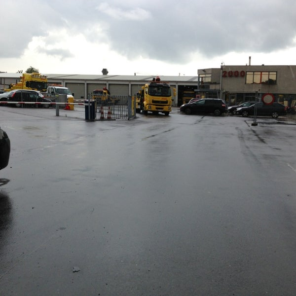

Vandaag begon ik de dag om 10 uur en eindigde ik om 18 uur. Ik werd warm onthaalt door mijn stagementor. Vervolgens kreeg ik een uitgebreide rondleiding over het grote pand van het bedrijf. Daarna was het al tijd voor mijn middagpauze daar heb ik nog een paar anderen collega's leren kennen. Na de middagpauze heeft de it verantwoordelijke mij al de basics van de it softwares die het bedrijf gemaakt uitgelegd. Daarna was de werkdag om en mocht ik naar huis gaan. Als ik deze eerste dag moet omschrijven in 1 woord kies ik voor het woord Leerrijk!
